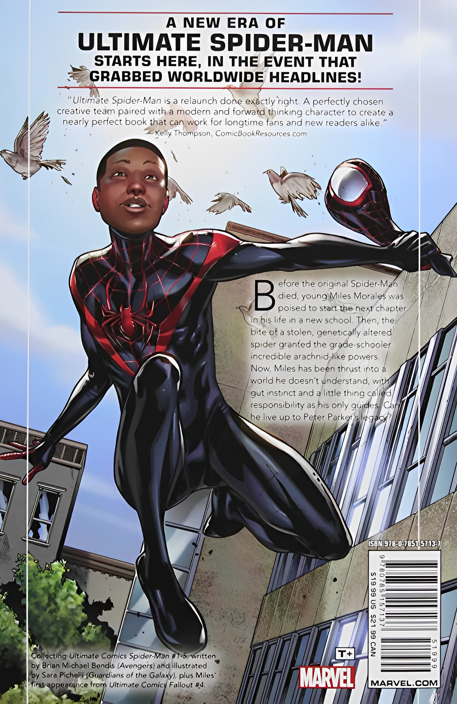
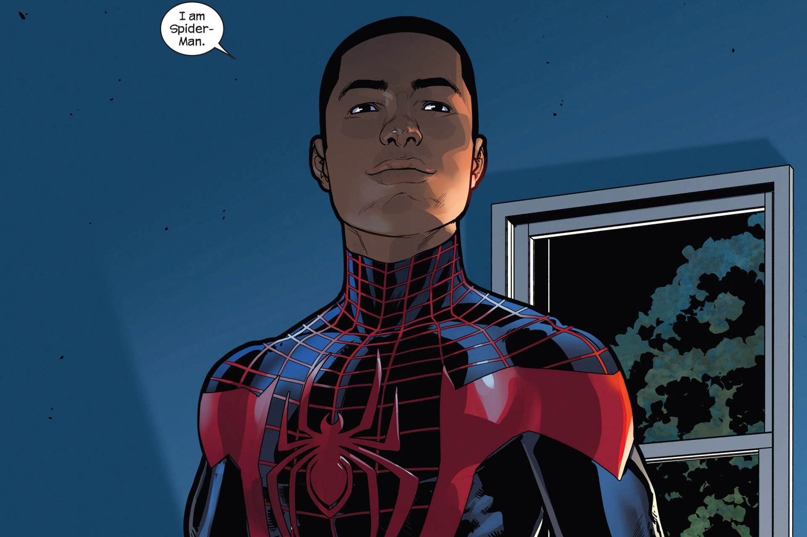
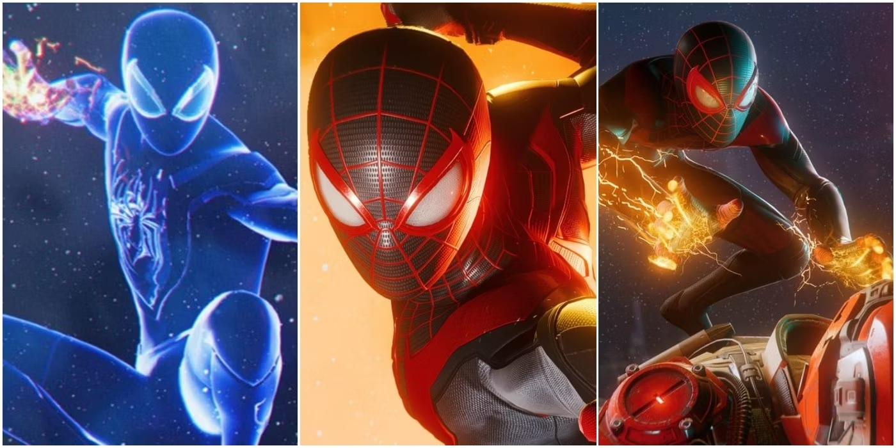

Miles Morales
Nos quadrinhos, Miles Morales foi introduzido em 2011 na série "Ultimate Comics: Spider-Man" da Marvel. Qual é a sua história?
A história de Miles Morales começa quando ele é introduzido como um estudante do ensino médio em Nova York. Ele vive em uma realidade alternativa em que Peter Parker, o Homem-Aranha original, morre. Eventualmente, Miles descobre que também possui habilidades aracnídeas e decide assumir a responsabilidade de se tornar um super-herói.
Miles enfrenta os desafios típicos da adolescência, como lidar com a escola, amizades e sua identidade como um super-herói. Ele também precisa equilibrar sua vida pessoal com suas responsabilidades como o novo Homem-Aranha.

Como ele conseguiu os seus poderes?
Miles Morales adquiriu seus poderes após ser picado por uma aranha geneticamente modificada de outro multiverso durante uma visita ao laboratório da Oscorp. Essa aranha é conhecida como Aranha Escarlate (também chamada de Aranha do Oz ou Aranha-Peixe). A picada da aranha concedeu a Miles habilidades aracnídeas extraordinárias.
Após o evento, Miles desenvolveu os seguintes poderes:
Força sobre-humana: Miles possui uma força aumentada, permitindo-lhe levantar cargas muito mais pesadas do que uma pessoa comum.Agilidade aprimorada: Ele possui reflexos, velocidade e agilidade superiores, permitindo-lhe mover-se rapidamente e reagir de forma ágil em situações de combate.
Habilidades de escalada: Miles é capaz de escalar paredes e superfícies verticais com facilidade, aderindo a elas como uma aranha.
Sentido de aranha: Assim como o Homem-Aranha original, Miles possui um "sentido de aranha" que o alerta para perigos iminentes, permitindo-lhe reagir rapidamente a ameaças e ataques.
Camuflagem e invisibilidade: Miles desenvolveu a habilidade de se camuflar e se tornar invisível temporariamente, permitindo-lhe se esconder e se mover furtivamente.
Descargas bioelétricas: Ele pode liberar descargas de energia bioelétrica, capazes de incapacitar inimigos ou danificar objetos.
Venom Blast: Miles pode gerar uma descarga de energia elétrica concentrada em suas mãos, que ele pode utilizar como um ataque de curto alcance para incapacitar adversários.

Como Miles se torna o Spider-Man?
Após a morte de Peter Parker em sua realidade, Miles Morales é inspirado a se tornar um herói e honrar o legado do Homem-Aranha. Ele cria um traje com um design único, incorporando a temática de sua herança afro-latina.
Miles assume o nome de Spider-Man e usa suas habilidades para proteger a cidade de Nova York e combater o crime. Ele se junta a outros heróis, incluindo aqueles do universo principal da Marvel, e se torna um membro valioso da comunidade de super-heróis. Miles Morales representa uma perspectiva diversificada do Homem-Aranha, trazendo consigo a influência de sua aranha mordedora vinda de outro multiverso e enriquecendo o universo Marvel com sua história única.